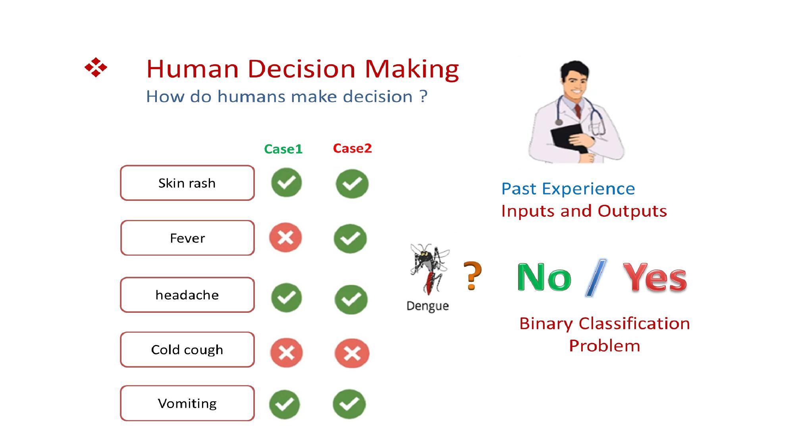
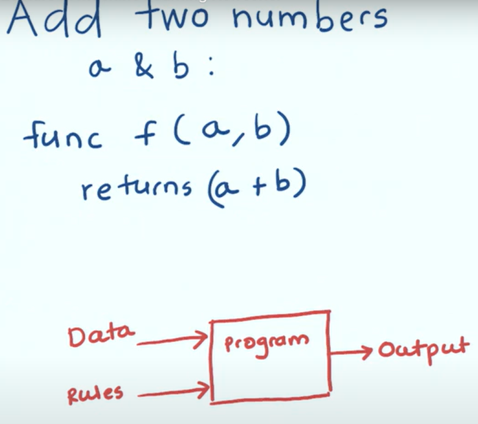
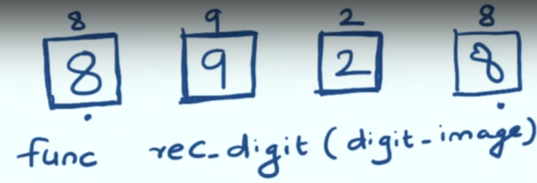
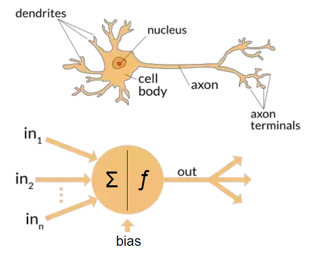
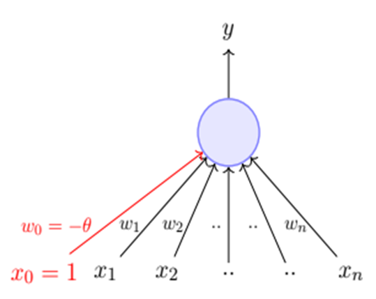
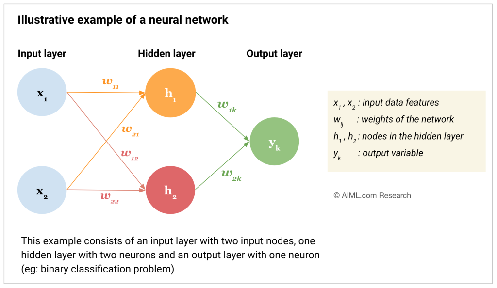
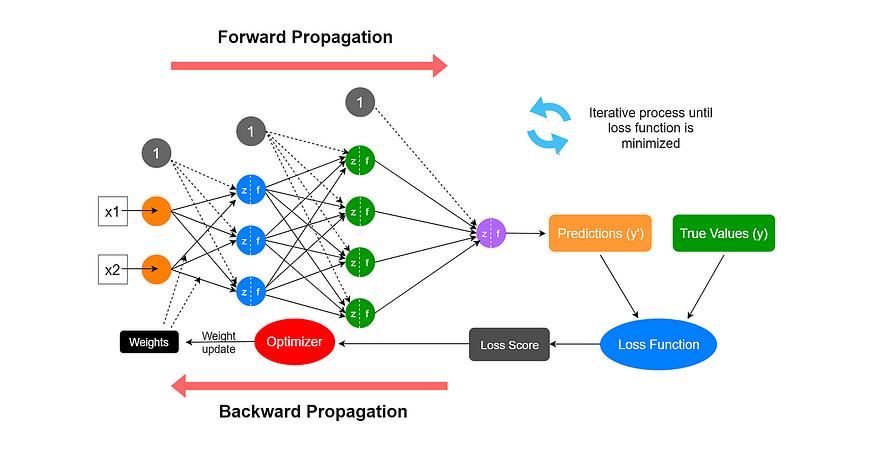

01 · The building blocks
Neural Networks & ANN
How do humans make decisions?
Before defining a Neural Network, it helps to see the problem it's solving. Imagine diagnosing dengue from symptoms — humans weigh multiple signals (skin rash, fever, headache, cough, vomiting) against past experience to reach a yes/no decision. That's exactly a binary classification problem: past experience = training data, symptoms = inputs, diagnosis = output.

From rule-based systems to data-driven models
Classical programming: you write explicit rules (f(a,b) returns a+b) — data and
rules go in, a program computes output. But for a task like recognizing a handwritten digit,
nobody can hand-write rules for every possible "8". Machine/Deep Learning flips this: you give
the system data + desired output, and it learns the rules itself.


What is a Neural Network?
A Neural Network is a computational model inspired by the human brain, designed to recognize patterns, learn from data, and make decisions — without pre-defined rules. It's the foundation of Deep Learning.
| Biological Neuron | Artificial Neuron |
|---|---|
| Dendrites — receive signals from other neurons | Input nodes — receive data, pass it to the next layer |
| Soma (cell body) — processes the signals | Hidden layer nodes — process/transform data |
| Axon — transmits processed signal onward | Output nodes — produce the final result |
| Synapse — connection to other neurons | Weights — control connection strength |
| Fires when signal crosses a threshold | Activation function — decides if/how strongly the neuron fires |
| Synaptic plasticity — connection strength changes with activity | Backpropagation — weights adjusted based on prediction errors |

The artificial neuron (perceptron) — the math
Each neuron computes a weighted sum of its inputs, plus a bias, then passes the result through an activation function:
z = (w₁·x₁ + w₂·x₂ + … + wₙ·xₙ) + b
y = f(z)
xᵢ— input featureswᵢ— weight (importance of inputi)b— bias (shifts the decision boundary)f— activation function (Sigmoid, ReLU, Tanh, …)y— the neuron's output

Why activation functions matter: without one, stacking layers is mathematically equivalent to a single linear layer — the network could only learn straight-line relationships. Non-linear activations let networks model curved, complex decision boundaries — essential for images, speech, and language.
From a single neuron to a network (ANN)
An Artificial Neural Network connects many neurons in layers — each layer transforms the data a little more, building up the ability to represent complex patterns.
- Input layer: receives the raw data — one neuron per input feature
- Hidden layer(s): do the computational heavy lifting; more layers → more complex patterns learnable
- Output layer: produces the final prediction (classification/regression)

How does an ANN learn?
1️⃣ Forward Pass
Input flows through the network; each neuron computes a weighted sum + activation, producing a prediction.
2️⃣ Loss Calculation
A loss function measures how far the prediction is from the true label (e.g. cross-entropy, MSE).
3️⃣ Backpropagation
The error is propagated backward, computing how much each weight contributed to the mistake, via the chain rule.
4️⃣ Weight Update
Gradient Descent nudges every weight to reduce the loss; the cycle repeats for many epochs.

Train / Validation / Test split
| Set | Used for |
|---|---|
| Training (~64%) | Fits the model — weights/biases updated directly from this data every epoch |
| Validation (~16%) | Checked after every epoch, never trained on — tunes hyperparameters, monitors overfitting |
| Test (~20%) | Held out completely until the end — used once, for an unbiased real-world performance estimate |
Key idea: the test set must remain completely unseen during training and tuning — otherwise performance metrics become overly optimistic.
02 · Why "deep"?
Why Deep Learning? — Hierarchical Feature Learning
In classical ML, a human engineer manually decides what features matter (edges, colour histograms, etc). In Deep Learning, each layer automatically learns increasingly abstract features from the raw data itself.
Each successive hidden layer composes the patterns detected by the previous layer into something more abstract — this is exactly what "deep" refers to: many stacked layers of representation.
| Aspect | Machine Learning | Deep Learning |
|---|---|---|
| Basic idea | Statistical algorithms learn patterns from data | Artificial neural networks learn patterns from data |
| Data requirement | Works with small/medium datasets | Requires large amounts of data |
| Task complexity | Better for simple, low-label tasks | Better for complex tasks (image, text) |
| Training time | Less | More |
| Feature extraction | Manual | Automatic |
| Learning process | Not end-to-end | End-to-end |
| Interpretability | Easy to explain | Hard to interpret (black box) |
| Hardware | Runs on CPU | Needs GPU / high-performance systems |
| Use cases | Spam detection, recommender systems | Image recognition, NLP, speech recognition |
03 · The neural network family
Types of Neural Networks
➡️ Feedforward (FNN)
Simplest ANN — data flows one direction, input → output. Used for basic classification tasks.
🖼️ Convolutional (CNN)
Specialized for grid-like data (images) — convolutional layers detect spatial hierarchies. Ideal for computer vision.
🔁 Recurrent (RNN)
Processes sequential data (time series, language) via loops that retain information over time. LSTMs/GRUs fix vanishing gradients.
⚔️ GANs
Two networks — a generator and a discriminator — compete to create realistic data. Used for image generation, style transfer.
🗜️ Autoencoders
Unsupervised — compress input into a latent representation and reconstruct it. Used for dimensionality reduction, anomaly detection.
🔀 Transformers
Self-attention mechanisms revolutionized NLP — power GPT, BERT; excel at translation, generation, sentiment analysis.
04 · From Turing to Generative AI
Brief History of AI
The early decades: birth & winters (1950-1993)
The modern era: from Deep Blue to Generative AI
Notice the pattern: hype → unmet expectations → "winter" → breakthrough. Deep Learning's 2012 breakthrough finally broke this cycle, thanks to data, compute, and algorithms aligning together.
05 · Proof it works at scale
DL Successes — The Last Decade
Case study — AlexNet & ImageNet (2012)
The Challenge: classify 1.2 million images into 1000 categories (the annual ImageNet/ILSVRC competition). The Breakthrough: Krizhevsky, Sutskever & Hinton's AlexNet — a deep CNN trained on GPUs — slashed the top-5 error rate from ~26% to ~15%. The Impact: proved deep networks + GPUs + large data beat hand-engineered features, triggering the modern DL boom.
AlphaGo (2016) & ChatGPT (2022)
AlphaGo (DeepMind)
Go has more possible positions than atoms in the universe — brute force is impossible. Combined deep neural networks with reinforcement learning + tree search. Defeated 18-time world champion Lee Sedol 4-1, decades ahead of expert predictions.
ChatGPT & Generative AI
LLMs trained on internet-scale text with the Transformer architecture learn to generate fluent, context-aware language. Reached 100 million users within two months — the fastest-adopted consumer app in history.
06 · Why now?
Reasons to Go Deep — Four Forces Behind the Boom
1️⃣ Data
Explosion of labelled data — ImageNet, web text, sensors, smartphones — gives networks enough examples to learn from.
2️⃣ Compute
GPUs (and later TPUs) made the massive matrix multiplications of deep networks fast and affordable.
3️⃣ Algorithms
ReLU, Dropout, Batch Normalization, residual connections, and the Transformer made very deep networks trainable.
4️⃣ Automatic Features
Networks learn their own features from raw data, removing the bottleneck of manual feature engineering.
CPU vs GPU vs TPU — why parallel hardware matters
🖥️ CPU
4-64 powerful cores, optimized for low-latency sequential logic. High clock speed (~3-5 GHz). MIMD-style — each core runs a different instruction stream. Best at: control flow, I/O, diverse general-purpose tasks.
🎮 GPU
Thousands of small cores (10,000+ CUDA cores). Lower clock speed but massive SIMT parallelism, very high memory bandwidth (~1-3 TB/s HBM). Best at: throughput on repetitive, parallel math.
Why DL needs GPUs: training is dominated by matrix multiplications and convolutions — millions of independent multiply-accumulate operations per layer. GPUs run the same operation across thousands of cores simultaneously, giving 10-100x speedups over CPUs. Tensor Cores further accelerate mixed-precision training.
07 · Where it's changing industries
Applications of Deep Learning
🏥 Healthcare
CNNs detect tumours, fractures, diabetic retinopathy from scans, often matching specialist accuracy. E.g. a hospital receiving 50,000 X-rays/day uses DL to flag suspicious scans for radiologists.
💰 Banking & Finance
Flags fraudulent transactions in real time by learning subtle, evolving misuse patterns — card networks score every transaction in milliseconds.
🎓 Education
Adaptive learning platforms personalise content and pace using a student's own performance data.
🚗 Computer Vision
Self-driving cars use CNNs to detect lanes, pedestrians, obstacles from camera/LiDAR — Tesla/Waymo run multiple deep networks per frame, 30+ times a second.
💬 NLP & Chatbots
Transformer-based LMs understand/generate language for translation, search, assistants — ChatGPT, Google Translate, Alexa, Siri.
🎬 Entertainment
Recommender systems learn viewing/listening patterns to personalise feeds — Netflix, Spotify, YouTube.
📱 Social Media
Suggests friends/content by analyzing profiles and interactions; powers targeted advertising.
🛒 Marketing & Sales
E-commerce sites (Amazon) recommend products from browsing history, personalize offers, predict customer behavior.
🗣️ Personal Assistants
Siri, Alexa process natural language, understand voice commands, manage reminders/calls/queries.
08 · Not free of limitations
Challenges of Deep Learning
📊 Data Hungry
Needs thousands to millions of labelled examples; performance degrades sharply with small datasets.
💸 Computationally Expensive
Training large models needs powerful GPUs/TPUs, significant time, and substantial energy consumption.
📦 Black-Box Nature
Predictions are hard to interpret — the core motivation for Explainable AI (XAI) techniques like Grad-CAM and SHAP.
⚖️ Overfitting & Bias
Models can memorise training data or inherit/amplify biases present in it, hurting generalisation and fairness.
🎯 Adversarial Vulnerability
Small, imperceptible input perturbations can fool deep networks into confident, wrong predictions.
🤔 Lacks True Understanding
Deep Learning finds statistical patterns; it does not possess genuine reasoning or consciousness.
Unit 1 — Summary
- Neural Networks are inspired by biological neurons; ANNs stack layers of these neurons to learn complex functions
- Deep Learning automatically learns hierarchical features from raw data, removing manual feature engineering
- AI's history (1950-today) shows cycles of hype and "winters" — broken in 2012 by data, compute, and algorithms converging
- Landmark successes — AlexNet, AlphaGo, ChatGPT — demonstrate DL's real-world impact
- DL powers healthcare, finance, vision, language, entertainment — but remains data-hungry, costly, and often a "black box"